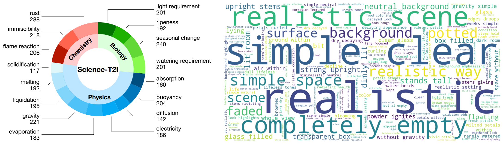
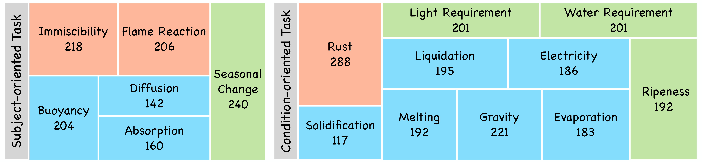
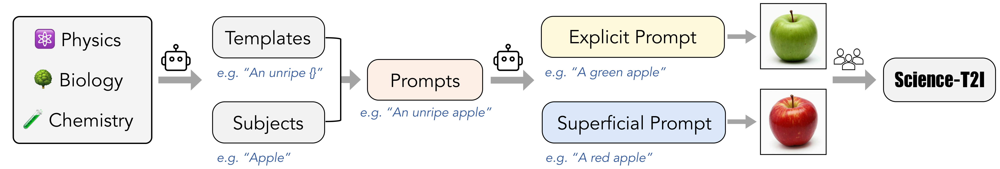
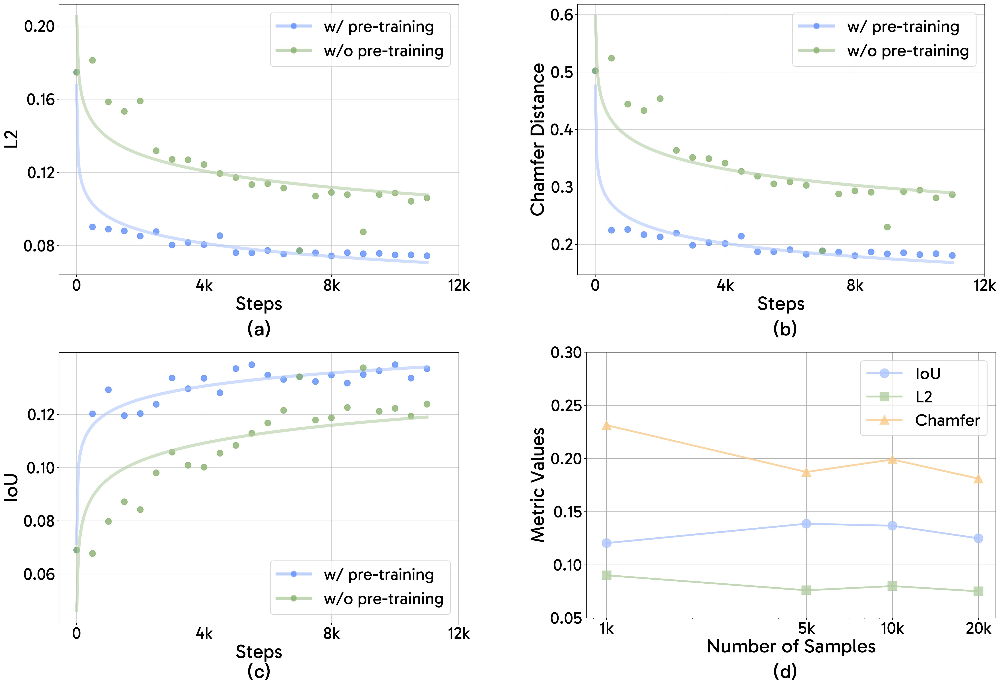
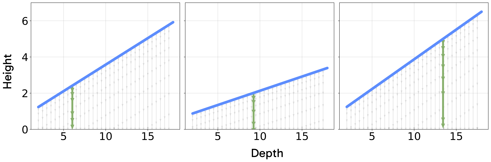
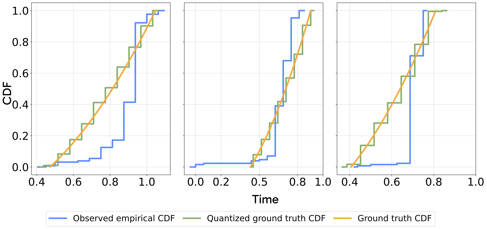

Addressing Scientific Illusions in Image Synthesis
We introduce the PISA (Physics-Informed Simulation and Alignment) framework for studying physics post-training.
PisaBench: We introduce PisaBench to examine the ability of video generative models to produce accurate physical phenomena by focusing on a straightforward dropping task.
Physics Post-Training: We present a two-stage post-training pipeline to enhance the physical accuracy of video diffusion models.
Generalization Analysis: We conduct a series of experiments to examine the our model's learned behavior and generalization ability.
Fig 1: When presented with knowledge-implicit prompts, can LMMs and VLMs effectively distinguish between real and fake scientific images? Can generative models produce scientifically plausible images from such prompts? Does fine-tuning generative models with relevant data enhance their ability to generalize based on knowledge? To explore these questions, we establish a benchmark for evaluating LMMs and VLMs, construct a dataset to train a reward model which can then serve as a reliable tool for assessing generative models, and fine-tune generative models to investigate the generalization.
We present a novel approach to integrating scientific knowledge into generative models, enhancing their realism and consistency in image synthesis. First, we introduce Science-T2I, an expert-annotated adversarial dataset comprising adversarial 20k image pairs with 9k prompts, covering wide distinct scientific knowledge categories. Leveraging Science-T2I, We present SciScore, an end-to-end reward model that refines the assessment of generated images based on scientific knowledge, which is achieved by augmenting both the scientific comprehension and visual capabilities of pre-trained CLIP model. Additionally, based on Science-T2I, we propose a two-stage training framework, comprising a supervised fine-tuning phase and a masked online fine-tuning phase, to incorporate scientific knowledge into existing generative models. Through comprehensive experiments, we demonstrate the effectiveness of our framework in establishing new standards for evaluating the scientific realism of generated content. Specifically, SciScore attains performance comparable to human-level, demonstrating a 5% improvement similar to evaluations conducted by experienced human evaluators. Furthermore, by applying our proposed fine-tuning method to FLUX, we achieve a performance enhancement exceeding 50% based on SciScore.
Science-T2I: An Adversarial Dataset Spanning Scientific Disciplines
Task overview. Science-T2I consists of 16 tasks spanning physics, chemistry and biology that require the model to infer or visualize concepts not explicitly stated in the prompts but rooted in underlying scientific principles.

Fig 2: Data statistics (left) of and wordcloud (right) of Science-T2I.
Task classification. Beyond a classification based on scientific disciplines, the tasks can be categorized into two distinct groups:
Subject-oriented task (ST)
require scientific reasoning to discern how inherent differences between subjects lead to varying visual features under identical conditions.
Condition-oriented task (CT)
focus on how a single condition affects various subjects. Scientific reasoning in these tasks centers on the applied condition, not the subject's individual properties.

Fig 3: Task classification of Science-T2I.
Prompt design. In Science-T2I, we categorize prompts into three types based on their use in scientific reasoning:
Explicit prompt (EP).
Reformulates the IP into a clear, descriptive statement that results in a scientifically accurate depiction (e.g., "a green apple" explicitly conveying immaturity).
Superficial prompt (SP).
Provides explicit but scientifically inaccurate descriptions, focusing on surface-level interpretations (e.g., interpreting "an unripe apple" as "a red apple").

Fig 4: Data curation pipeline of Science-T2I.
Data curation. We utilize GPT-4o to create templates and generate corresponding prompts during the data curation process. These outputs are then used to guide T2I models for image generation. Following this, human annotators review and filter the data, incorporating insights from an additional website knowledgebase to ensure the reliability and accuracy of the final dataset.
As shown in Table 1, the results of running the baseline models on the benchmark indicate a consistent failure to generate physically accurate dropping behavior, despite the visual realism of their generated frames.
Qualitatively, we see common failure cases in the above showcases, such as implausible object deformations, floating, hallucination of new objects, and unrealistic special effects. We further visualize a random subset of generated trajectories on the left of Figure 3. In many cases, the object remains completely static, and sometimes the object even moves upward. When downward motion is present, it is often slow or contains unrealistic horizontal movement.
Figure 3: Trajectory visualization. On the left, we plot random trajectories from the baseline models in Table 1. On the right, we show random trajectories from our fine-tuned model. The baseline trajectories exhibit unrealistic behavior, and most of them stay completely static. On the right, we see the trajectories consistently falling downward with collision and rolling behavior being modeled after the point of contact.
Physics Post-Training
We present a post-training process to address the limitations of current models. We utilize simulated videos that demonstrate realistic dropping behavior. Our approach for post-training is inspired by the two-stage pipeline consisting of supervised fine-tuning followed by reward modeling commonly used in LLMs.
Simulated Adaptation Data.
We use Kubric to create simulated videos of objects dropping and colliding with other objects on the ground. Each video consists of 1-6 dropping objects onto a (possibly empty) pile of up to 4 objects underneath them. The videos are 2 seconds long, consisting of 32 frames at 16 fps. The objects are sourced from the Google Scanned Objects (GSO) dataset, which provides true-to-scale 3D models created from real-world scans across diverse categories.
Physics Supervised Fine-Tuning (PSFT).
In the first stage, we use the pretrained Open-Sora v1.2 as our base model and fine-tune it on our simulated video dataset. We employ Open-Sora v1.2's rectified flow training objective without modification.
We have the following findings:
Fine-tuning with this data alone is sufficient to induce realistic dropping behavior in the model. (See Table 1)
Only 5,000 samples are needed to achieve optimal results. (See Figure 4)
The learned knowledge from Open-Sora's pretraining plays a critical role in our task. (See Figure 4)

Figure 4. Plots (a), (b), and (c) demonstrate that our metrics tend to improve with further training and that leveraging a pre-trained video diffusion model enhances performance compared to random initialization. In plot (d), the size of the training dataset varies in each training run (each consisting of 5k steps). With only 5k samples, we can achieve optimal results.
Object Reward Optimization (ORO).
In the second stage, we propose an approach Object Reward Optimization (ORO) to use reward gradients to guide the video generation model toward generating videos where the object's motion and shape more closely align with the ground truth. We use a pretrained vision model (depth, optical flow, and segmentation) to compare the signals derived from the model's generation with the ground truth. This reward can then be backprobagated to the model through its denoising steps. Our approach is similar to the VADER framework, please see our paper for more details.
We utilize SAM 2, RAFT, and Depth-Anything-V2 to generate segmenation masks, optical flow, and depth maps of the falling objects and define Segmentation Reward, Optical Flow Reward, and Depth Reward as follows:
\[
\begin{equation}
R_{\text{seg}}(x_0', x_0) = \operatorname{IoU}(M^{\text{gen}}, M^{\text{gt}})\\
R_{\text{flow}}(x_0', x_0) = -|V^{\text{gen}} - V^{\text{gt}}| \\
R_{\text{depth}}(x_0', x_0) = -|D^{\text{gen}} - D^{\text{gt}}|
\end{equation}
\]
We begin from the checkpoint of the first stage, which is trained on 5,000 samples trained over 5,000 gradient steps. We then fine-tune the model with ORO on the smiulated dataset. We have the following findings:
Incorporating ORO in reward modeling further improves performance. (See Table 1)
Each reward function enhances the aspect of physicality that aligns with its intended purpose—segmentation rewards improve shape accuracy, while flow rewards and depth rewards improve motion accuracy. (See Table 1)
Generalization Analysis
Having introduced our post-training methodology, we probe further into the model's understanding of the interaction between gravity and perspective, the two laws that determine the dynamics of our videos. We first test if the learned physical behavior of our model can generalize to dropping heights and depths beyond its training distribution. Then, we study the ability of the model to learn the probability distribution induced by the uncertainty of perspective.
Generalization to Unseen Depths and Heights.
Depth and height are the main factors that affect the dynamics of a falling object in our videos. We can see this by combining the laws of gravity with perspective under our camera assumptions to model the object's image \(y\) coordinate as a function of time:
\[
y(t) = \frac{f}{Z} (Y_0 - \frac{1}{2} g t^2)
\]
We create a simulated test set in which a single object is dropped from varying depths and heights, using objects and backgrounds unseen during training. We create an in-distribution (ID) and out-of-distribution (OOD) test set respectively.
Setting
L2 (\(\downarrow\))
Chamfer Distance (\(\downarrow\))
IoU (\(\uparrow\))
Time Error (\(\downarrow\))
ID
0.036
0.088
0.155
0.049
OOD
0.044
0.143
0.049
0.187
Table 2: Results of our metrics on in-distribution (ID) and out-of-distribution (OOD) depth-height combinations. Depth values range from 1-5m (ID range \([1,3]\)) and height values range from 0.5-2.5 (ID range \([0.5,1.5]\)).
As shown in Table 2, our analysis shows that performance degrades for out-of-distribution scenarios. Since depth and height are the main physical quantities that affect falling dynamics, this finding indicates that our model may struggle to learn a fully generalizable law that accounts for the interaction of perspective and gravity.
Distributional Analysis.
The evolution of a physical system is not uniquely determined by a single initial image, since the lossy uncertainty of perspective induces a distribution of possible outcomes as shown in Figure 5. An ideal video world model should (1) output videos that are faithful to the evolution of some plausible world state and (2) provide accurate coverage across the entire distribution of the world that is possible from its conditioning signal. In this section, we examine these two facets by studying \(p(t|y)\): the distribution of dropping times possible from an object at coordinate y in the image plane. To do this, we create a simulated dataset that has a much wider distribution \(p(t|y)\) than our PSFT dataset.
Figure 5. Demonstration of ambiguity in 2D perspective projections. Each of the three clouds appears the exact same in the camera's image. The right side shows how we perform a scale and translation augmentation to generate deliberately ambiguous data.
Testing (1): 3D faithfulness of trajectories.
After training our model on this new dataset, we test whether its trajectories are consistent with a valid 3D world state. We first obtain an estimated dropping time from generated videos using SAM2 masks. Using knowledge of the camera position, focal length, sensor width, and \(y\), we can obtain an implied depth and height of the trajectory. We can then back-project the video trajectory to 3D and analyze whether they constitute physically accurate trajectories. As show in in Figure 6, we find that our model's lifted trajectories consistently align with the 3D trajectory at the height and depth implied by its dropping time, giving evidence that the model's visual outputs are faithful to some plausible real-world state.

Figure 6: Examples of model trajectories lifted to 3D. The blue line represents the height of the camera ray passing through the bottom of the dropping object as a function of depth. The set of possible dropping trajectories at a given depth are depicted in gray. The lifted trajectory of the model is depicted in green.
Testing (2): distributional alignment.
Going beyond the level of individual trajectories, we study the model's learned conditional distribution \(p(t|y)\). We create 50 different initial images with differing values of y, generate 128 different videos from each, and estimate the dropping time in each video. Using the laws of gravity, the laws of perspective, and the assumption of uniform depth sampling in our dataset, we can analytically derive the probability \(p(t|y)\) as:
\[
\begin{equation}
p(t | y) =
\begin{cases}
\frac{gt}{(Z_{\max} - Z_{\min})\beta}, & t_{\min} \leq t \leq t_{\max} \\
0, & \text{otherwise}
\end{cases}
\end{equation}
\]
We then measure goodness-of-fit for each of the 50 experiments using the Kolmogorov-Smirnov (KS). The null hypothesis of our KS test is that the two distributions being compared are equal, and we consider p-values less than 0.05 as evidence of misalignment. Since our measured times have limited precision and can only take 32 distinct values—due to estimating the contact frame—we approximate the ground truth \(p(t|y)\) using a Monte Carlo method. We sample 1000 values from the ground truth distribution and then quantized them into 32 bins corresponding to their frame, which we use as ground truth observations in the KS test. We find that in all 50/50 cases, the p-value from the test is less than 0.05, which provides evidence that the model does not learn the correct distribution of dropping times. We visualize the misalignment between the empirical cdf of the model's in Figure 7.

Figure 7: Visualizing \(p(t|y)\) misalignment for different images.Green shows the ground-truth CDF, orange is the 32-frame quantized version, and blue is the empirical CDF of 128 different samples of dropping times from the model.
Conclusion
This work studies post-training as an avenue for adapting adapting pre-trained video generator into world models. We introduce a post-training strategy that is highly effective in aligning our model. Our work raises interesting insights into the learned distributions of generative models. Qualitatively, large scale image or video generative models appear to excel at generating likely samples from the data distribution, but this alone does not imply that they match the data distribution well in its entirety. As long as a model is able to generate likely samples, global distributional misalignment is not necessarily a problem for content creation. However, this problem becomes critical for world models, where alignment across the entire distribution is necessary for faithful world simulation. The insights revealed by our study, made possible by our constrained and tractable setting, indicate that although post-training improves per-sample accuracy, general distributional alignment remains unsolved.
BibTeX
@article{li2025pisa,
title={PISA Experiments: Exploring Physics Post-Training for Video Diffusion Models by Watching Stuff Drop},
author={Li, Chenyu and Michel, Oscar and Pan, Xichen and Liu, Sainan and Roberts, Mike and Xie, Saining},
journal={arXiv preprint arXiv:2503.09595},
year={2025}
}